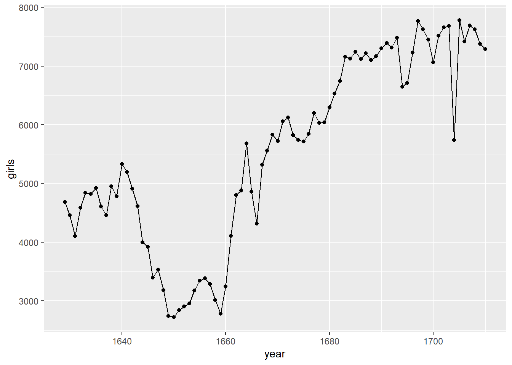
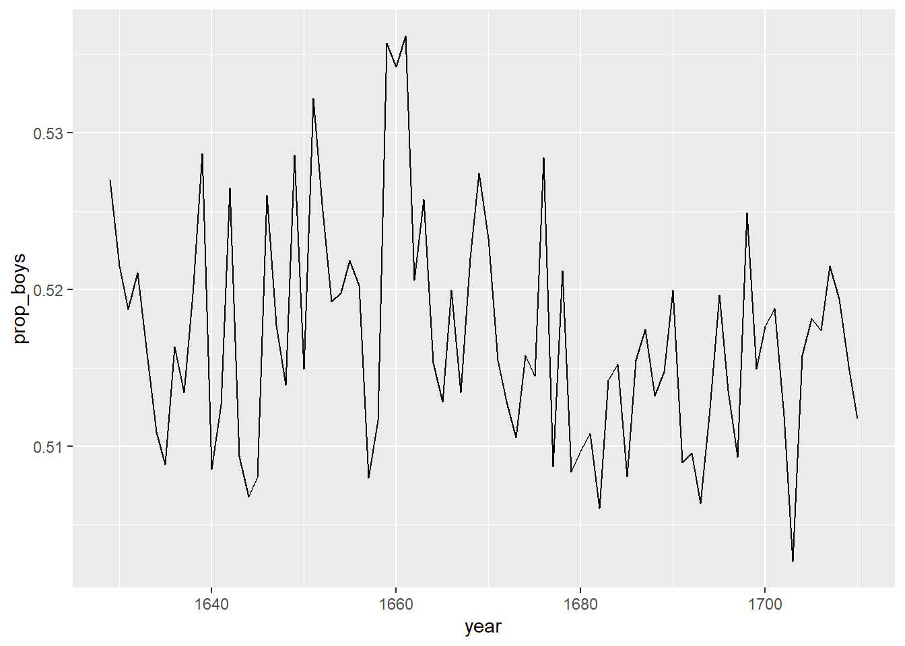
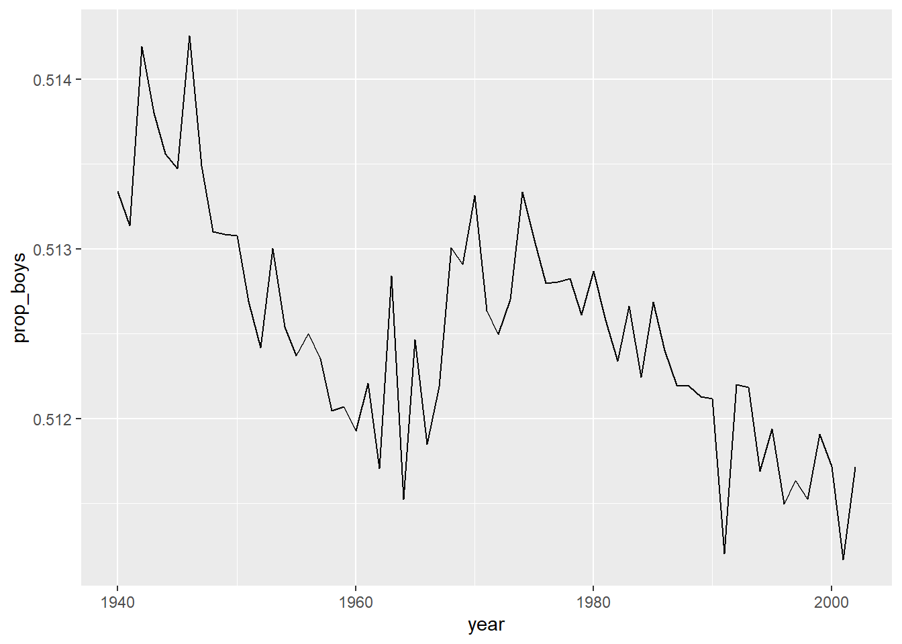

library(tidyverse)
library(openintro)HW 1 - Introduction to data
Due Sunday, May 15, 9:00pm on Gradescope
Problem set (25 points)
Exercise 1.2 (2 points)
Exercise 1.8 (5 points)
Exercise 1.12 (5 points)
Exercise 1.20 (2 points)
Exercise 2.8 (2 points)
Exercise 2.12 (3 points)
Exercise 2.14 (1 point)
Exercise 2.22 (2 points)
Exercise 2.22 - follow-up (3 points)
- Is your study blind?
- Is it double-bind?
- If it is not blind, can you make it blind?
Lab exercises - Dr. Arbuthnot’s baptism records (25 points)
You can find the lab here
Exercise 1 (2 points)
Insert any text here.
arbuthnot$girls [1] 4683 4457 4102 4590 4839 4820 4928 4605 4457 4952 4784 5332 5200 4910 4617
[16] 3997 3919 3395 3536 3181 2746 2722 2840 2908 2959 3179 3349 3382 3289 3013
[31] 2781 3247 4107 4803 4881 5681 4858 4319 5322 5560 5829 5719 6061 6120 5822
[46] 5738 5717 5847 6203 6033 6041 6299 6533 6744 7158 7127 7246 7119 7214 7101
[61] 7167 7302 7392 7316 7483 6647 6713 7229 7767 7626 7452 7061 7514 7656 7683
[76] 5738 7779 7417 7687 7623 7380 7288Exercise 2 (3 points)
Insert any text here.
arbuthnot %>%
ggplot(aes(x = year, y = girls)) +
geom_point() +
geom_line()
arbuthnot %>%
ggplot() +
geom_line(aes(x = year, y = girls))Exercise 3 (4 points)
Insert any text here.
arbuthnot %>%
mutate(prop_boys = boys / (boys + girls)) %>%
ggplot() +
geom_line(aes(year, prop_boys))
Exercise 4 (4 points)
Insert any text here.
present# A tibble: 63 x 3
year boys girls
<dbl> <dbl> <dbl>
1 1940 1211684 1148715
2 1941 1289734 1223693
3 1942 1444365 1364631
4 1943 1508959 1427901
5 1944 1435301 1359499
6 1945 1404587 1330869
7 1946 1691220 1597452
8 1947 1899876 1800064
9 1948 1813852 1721216
10 1949 1826352 1733177
# ... with 53 more rowspresent$year [1] 1940 1941 1942 1943 1944 1945 1946 1947 1948 1949 1950 1951 1952 1953 1954
[16] 1955 1956 1957 1958 1959 1960 1961 1962 1963 1964 1965 1966 1967 1968 1969
[31] 1970 1971 1972 1973 1974 1975 1976 1977 1978 1979 1980 1981 1982 1983 1984
[46] 1985 1986 1987 1988 1989 1990 1991 1992 1993 1994 1995 1996 1997 1998 1999
[61] 2000 2001 2002min(present$year)[1] 1940max(present$year)[1] 2002nrow(present)[1] 63ncol(present)[1] 3dim(present)[1] 63 3present# A tibble: 63 x 3
year boys girls
<dbl> <dbl> <dbl>
1 1940 1211684 1148715
2 1941 1289734 1223693
3 1942 1444365 1364631
4 1943 1508959 1427901
5 1944 1435301 1359499
6 1945 1404587 1330869
7 1946 1691220 1597452
8 1947 1899876 1800064
9 1948 1813852 1721216
10 1949 1826352 1733177
# ... with 53 more rowsExercise 5 (2 points)
Insert any text here.
# Insert code for Exercise 5 hereExercise 6 (5 points)
Insert any text here.
present %>%
mutate(prop_boys = boys / (boys + girls)) %>%
ggplot() +
geom_line(aes(year, prop_boys))
Exercise 7 (5 points)
Insert any text here.
present %>%
mutate(total = boys + girls) %>%
arrange(desc(total))# A tibble: 63 x 4
year boys girls total
<dbl> <dbl> <dbl> <dbl>
1 1961 2186274 2082052 4268326
2 1960 2179708 2078142 4257850
3 1957 2179960 2074824 4254784
4 1959 2173638 2071158 4244796
5 1958 2152546 2051266 4203812
6 1962 2132466 2034896 4167362
7 1956 2133588 2029502 4163090
8 1990 2129495 2028717 4158212
9 1991 2101518 2009389 4110907
10 1963 2101632 1996388 4098020
# ... with 53 more rows